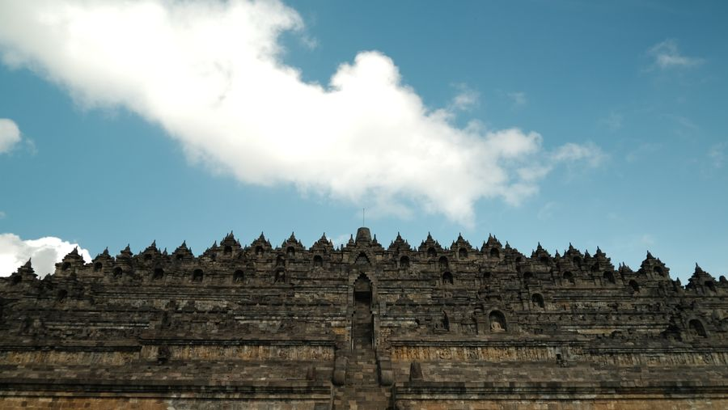
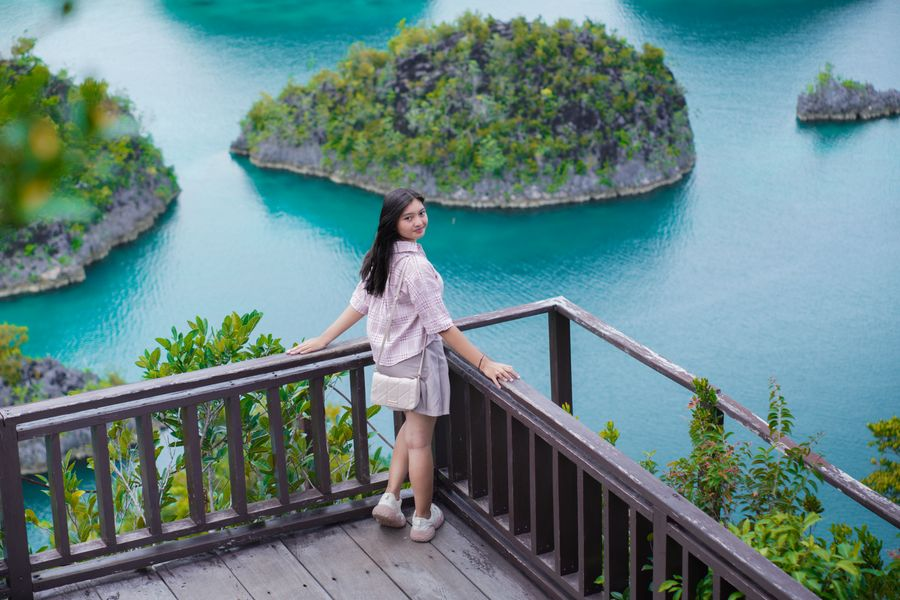
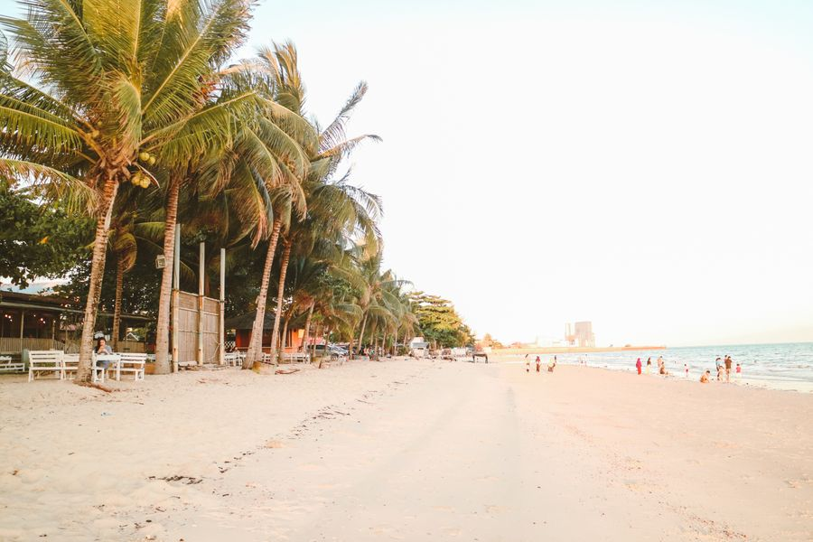

Bali
Pantai, matahari, dan waktu santai.
Mau ke mana? TERBANGIN aja.
Temukan penerbangan yang cocok dengan tujuan, waktu, dan budget perjalananmu. Pilih destinasi, kami bantu cari jalannya.

Pantai, matahari, dan waktu santai.

Budaya dan kuliner yang selalu dirindukan.

Petualangan dan pemandangan yang istimewa.

Pantai tenang dan suasana pulau yang nyaman.

Air jernih dan keindahan bawah laut.

Gerbang untuk menjelajahi Kalimantan.